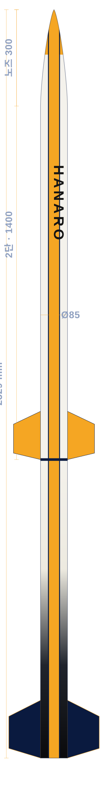

Projects
도면에서 하늘까지,
기록으로 남긴 로켓들
각 프로젝트의 목표와 기간, 담당 팀, 설계→제작→시험→발사 과정과 결과를 기록합니다.
Reference Build · 기준 기체
2단 사운딩 로켓
하나로 3D 도색 모델에서 도출한 대표 기체입니다. 프로젝트 기록의 표준 템플릿으로 사용하세요.
Goal · 목표
대회 규격에 맞춘 2단 사운딩 로켓을 설계·발사하고, 과학 탑재체의 비행 데이터를 확보한다.
Period · 기간
착수–완료 입력
설계 · 제작 · 시험 · 발사 캠페인.
Team · 담당
추진 · 공력·구조 · 전자 · 회수 전 팀 참여.
팀 소개
Development · 개발 과정
설계
Design목표 고도 설정, 공력·구조·추진 해석, Von Kármán 노즈 및 2단 상세 설계.
제작
Manufacture복합재 기체 성형, 엔진·추진제 제작, 항전 스택·회수 시스템 조립.
시험
Test지상 연소 시험, 사출·낙하산 전개 시험, 항전 통합 점검.
발사
Launch발사 캠페인, 비행·텔레메트리 수집 및 회수 후 분석.
Result · 결과
발사 결과·성과를 입력하세요. 고도 / 결과 / 수상 입력

- 전장 Length
- 2,329 mm
- 동체경 Diameter
- Ø 85 mm
- 노즈 Nose
- Von Kármán · 300 mm
- 단 분리 Stage sep.
- 1,400 mm
- 구성 Stages
- 2단
Gallery · 활동 기록
Propulsion · 지상 연소 시험활동 사진과 설명을 입력하세요. Airframe · 기체 조립활동 사진과 설명을 입력하세요. Launch · 발사 캠페인활동 사진과 설명을 입력하세요.